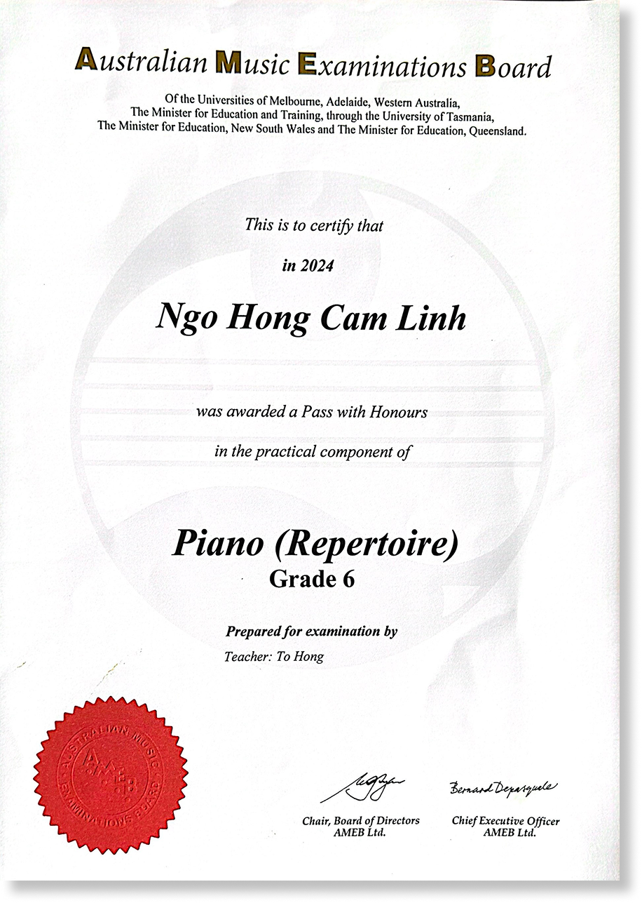
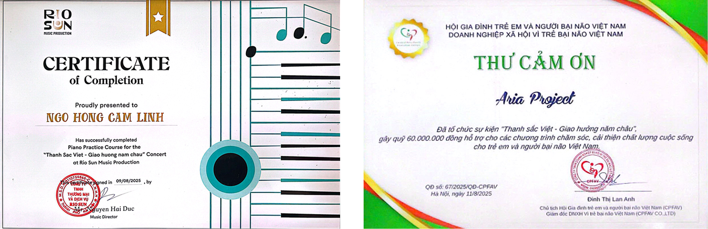
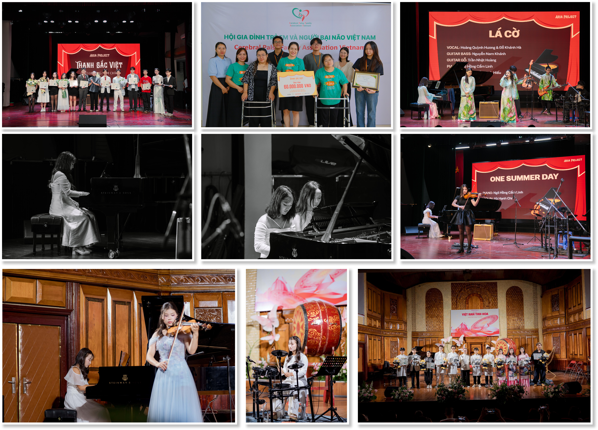
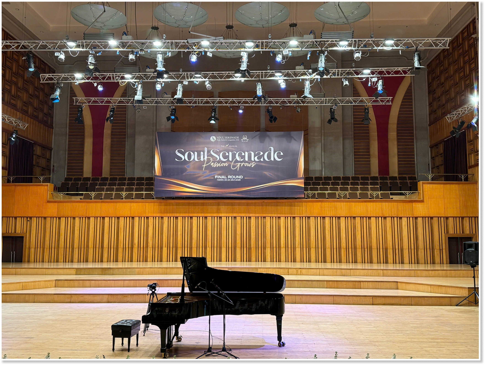
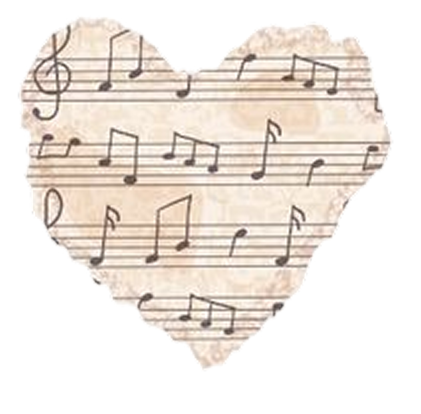
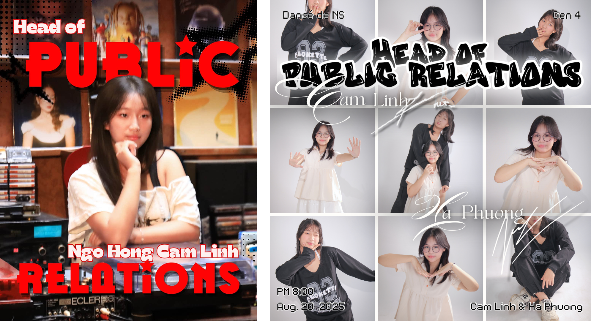

AMEB
AMEB was my first time taking a formal piano exam, and it turned years of practice into one both anxious and exciting challenge.
Two seasons with the Aria Project, and both were teams with enjoyable moments. Besides piano, I tried to play drums and made no mistakes during the performance.


My hands were shivering that day due to the cold winter. However, I still managed to finish my performance and achieved a silver medal.



AMEB was my first time taking a formal piano exam, and it turned years of practice into one both anxious and exciting challenge.
Danse was my first time leading the public relations team.
